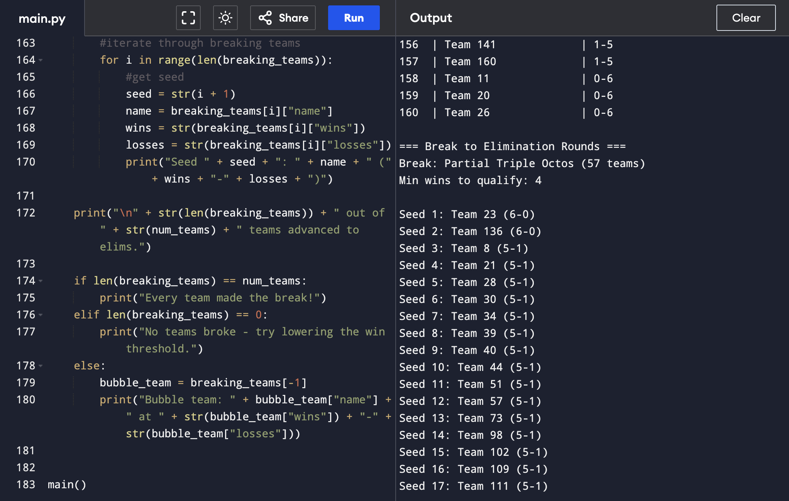

BracketSizer — Debate Tournament Calculator
Objective: Build the AP CSP Create Performance Task—a program that simulates a debate
tournament and calculates how many teams break to elimination rounds, the bracket size, and the win
cutoff required to advance.
My role: Sole designer and developer; authored algorithm logic, user input flow, test
cases, and all written responses for the performance task.
What I learned: Python control structures, procedural abstraction, and documenting
code for technical audiences. I strengthened professional writing through the CPT video script and written
responses.
Challenges: Modeling variable team counts and break structures without overcomplicating
the user interface; validating outputs against real tournament scenarios from debate experience.
Leadership & teamwork: Independently managed the full design cycle; peer-reviewed logic
with classmates and incorporated feedback before submission.